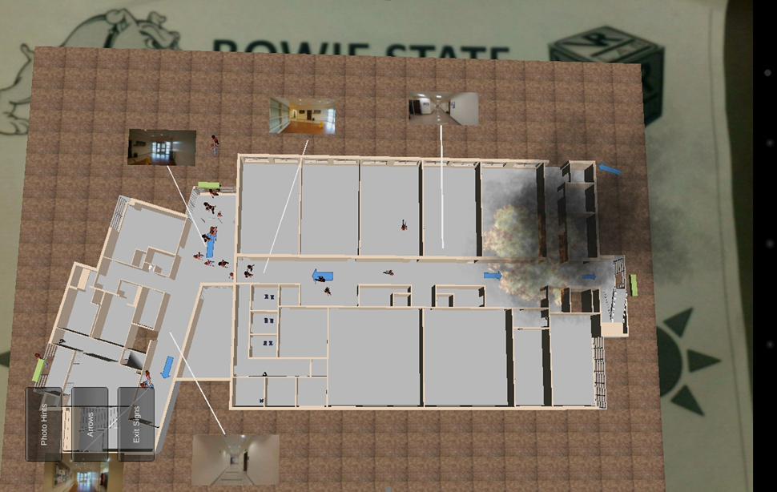
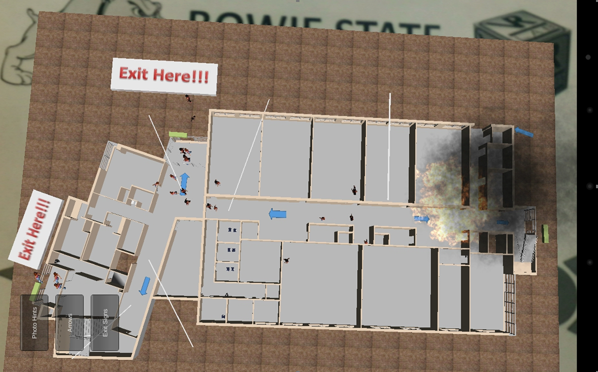
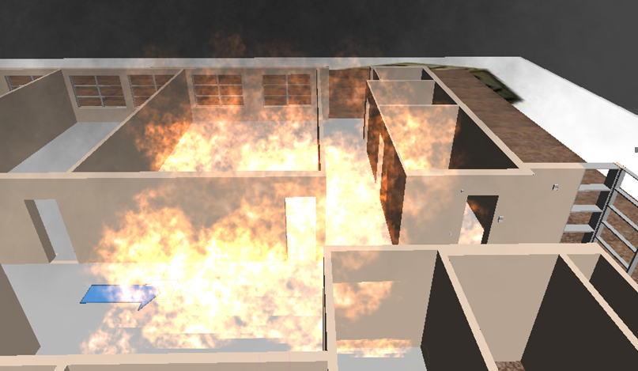
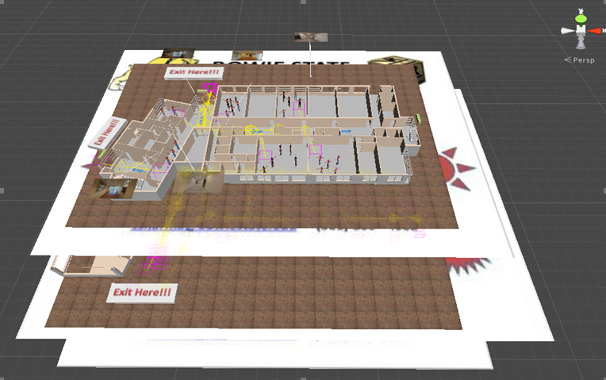
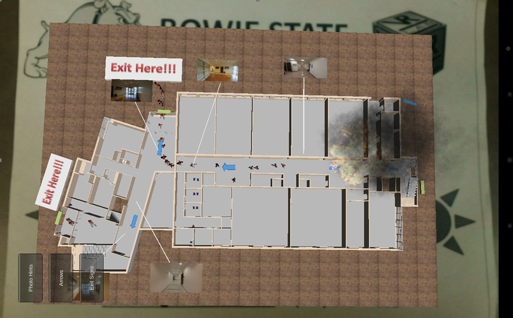

Mobile Augmented Reality Application for Building Evacuation Using Intelligent Signs
Current Students: James Stigall
Past Students: Usha Govindaraju, Pranay Rajeev, Dexter Ballerda and Diliorah Arah
Status: Current
First Floor 1 Marker-Second Floor 2 MarkerThird floor 3
Augmented reality (AR) is a technology that allows people to view the real world augmented by computer-generated components. A mobile AR application (MARA) was built to assist users to evacuate the Computer Science Building located at Bowie State University. Live evacuation drills which seem like an ideal way of training people how to evacuate a building; however, humans cannot always participate in evacuation drills since those drills may conflict with their personal schedules. Another drawback to live evacuation drills is that they may be dangerous to participate in since they could require participants to encounter hazards. Lastly, live evacuation drills do not feature the genuine sense of urgency as real emergencies meaning that live evacuation drills may not be effective at training people to evacuate. Virtual evacuation drills train people to evacuate a building without them having to be present at a live evacuation drill and encounter the danger that they may present. Thus, the MARA was built as an alternative to live evacuation drills using Unity3d along with the Vuforia AR Toolkit and the Android SDK. The uniqueness of this research effort is the inclusion of visual cues, known as intelligent signs, to further assist the user in evacuating the building. Although, the app has been tested out throughout its development, a user study will be performed to evaluate its usability and the effectiveness of the intelligent signs.
| |
The MARA features four different intelligent signs to help the users determine where the exits are throughout the building and their evacuation path to those exits.
- Blinking Exit Signs: These are signs in the environment with the wording “Exit Here!!!” shown in red letters. These signs are placed at each exit door in the building.
- Blue Arrows: On each floor, there are blue arrows placed on the floor. The purpose for the arrows are to indicate the paths towards each exit.
- Photo References: Real-life photos were taken at key points along each floor.
- Moving Doors: The moving doors are the green bars indicating the major doorways on each floor that the user will go through to get towards the exit. These could also be used to indicate were the exits are.
|
| |
|
|
| |
 |
 |
| |
the floor with all intelligent signs visible with the buttons in the foreground and the marker in the background |
the first floor without the exit signs |
| |
 |
 |
| |
the first floor without the photo references |
Fire and smoke in the building |
| |
 |
 |
| |
Models superimposed on of their respective markers in Unity3D |
The MARA in use |
| |
Hypothesis 1: Users will find the AR enthralling helping them maintain their attention spans as they are learning how to evacuate the Computer Science Building.
Hypothesis 2: Users will be able to use the app with little to no difficulty.
Hypothesis 3: The featured intelligent signs will help users evacuate the building.
Hypothesis 4: Overall, the MARA will prove to be an ideal alternative to live evacuation drills since it trains users on how to evacuate the building while exploiting the visual appeal that AR offers and providing hints assisting users in their evacuations.
|
[Acknowledgement:This study is supported, in part, by National Science Foundation, Award HRD‐1137541 and Award Number: HRD-1238784]
Publications
- Stigall, J., Bodempudi, S.T., Sharma, S, Scribner, D., Grynovicki, J., Grazaitis, P., "Use of Microsoft HoloLens in indoor evacuation", International Journal of Computers and their Applications, IJCA, March 2019. (Invited paper under review)
- Sharma, S, Bodempudi, S.T., Scribner, D., Grynovicki, J., Grazaitis, P., "Emergency response using HoloLens for building evacuation", Proceeding of 21st International Conference on Human-Computer Interaction, Orlando, Florida, USA, 26-31 July 2019. (Accepted)
- Stigall, J., Bodempudi, S.T., Sharma, S, Scribner, D., Grynovicki, J., Grazaitis, P., "Building Evacuation using Microsoft HoloLens", Proceedings of 27th International Conference on Software Engineering and Data Engineering (SEDE 2018), New Orleans, Louisiana, USA, pp. 20-25, October 8-10, 2018. [Best paper award finalist]
- James Stigall and Dr. Sharad Sharma, "Mobile augmented reality application for building evacuation" , Poster Presentation, 11th Annual Grant Expo and Research day, Office of Research and Sponsored Programs (ORSP), Bowie State University, April 10, 2018. [Won first Prize]
- Stigall, J., Sharma, S, "Mobile Augmented Reality Application for Building Evacuation Using Intelligent Signs", proceedings of ISCA 26th International Conference on Software Engineering and Data Engineering (SEDE-2017), pp. 19-24, San Diego,CA, USA, October 2-4, 2017.
- Sharma, S, Jerripothula, S., "An indoor augmented reality mobile application for simulation of building evacuation", proceedings of SPIE conference on the Engineering Reality of Virtual Reality 2015, paper 9392-7, San Francisco, CA, USA, 9 - 10 February 2015.
 VR LABORATORY (C) 2011-2019, ALL RIGHTS RESERVED
VR LABORATORY (C) 2011-2019, ALL RIGHTS RESERVED |

{kind=link}
{kind=link}
{kind=link}
{kind=link}
{kind=link}
{kind=link}
{kind=link}
{kind=link}